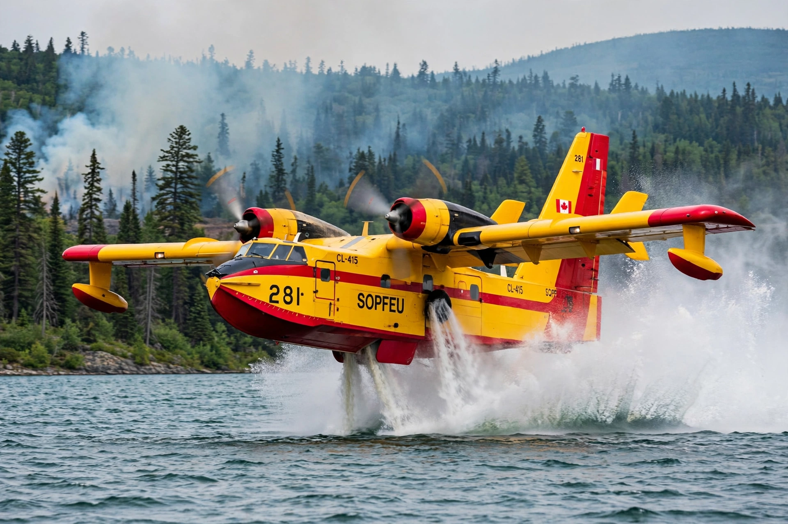

Canadair Ltd. was a Canadian civil and military aircraft manufacturer, based in Montreal, active from 1944 until its absorption into Bombardier Aerospace in 1986.
| Canadair | |
|---|---|
 | |
| Founded | 1944 |
| Defunct | 1986 (merged into Bombardier) |
| Headquarters | Montreal, Canada |
| Industry | Aerospace |
Founded as a government Crown corporation to build PBY Catalina flying boats, Canadair later produced licence-built and original designs: the CL-28 Argus maritime patrol aircraft, Canadair Sabre, CF-104 Starfighter, CL-41 Tutor trainer, the Challenger business jet (CL-600) and the CL-215 and CL-415 amphibious water bombers used for firefighting worldwide.
Privatised and sold to Bombardier in 1986, its Challenger and regional jet lines became the foundation of Bombardier Aerospace; the Canadair Regional Jet (CRJ) series grew from the Challenger design.
Recreated from memory.